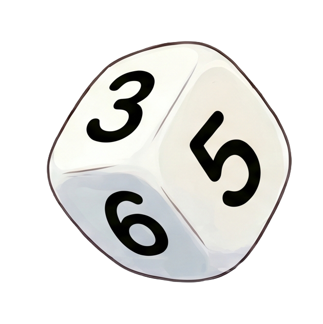
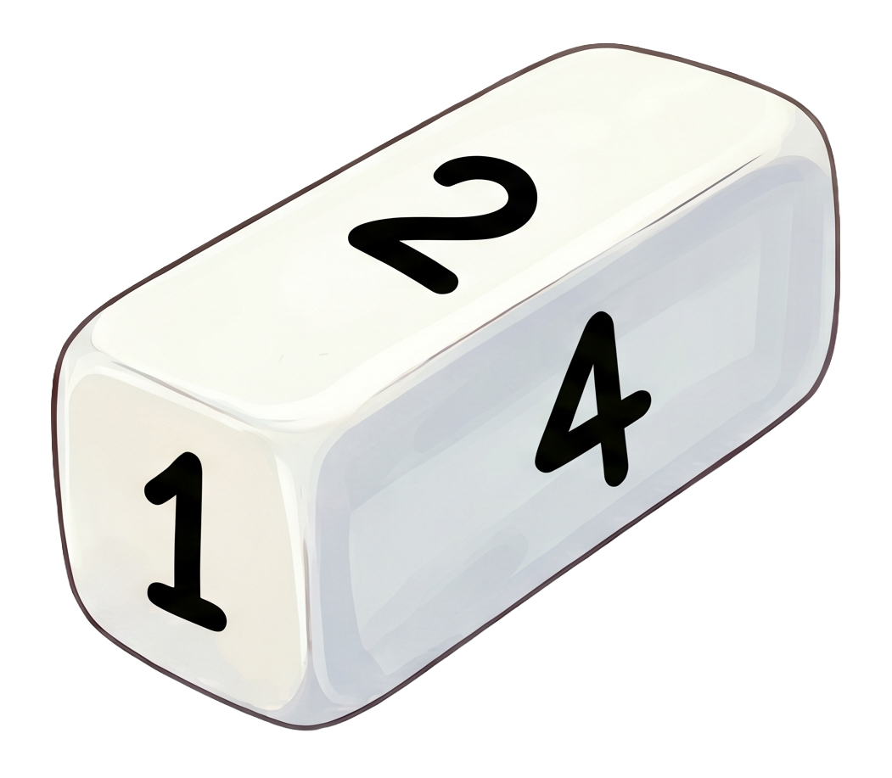

1. 개요
2. 정육면체
3. 직육면체
4. 최종 정리
1. 전체 실험 개요
이 활동은 주사위를 한 번에 많이 던지는 것이 아니라, 1차·2차·3차로 나누어 던진 횟수를 누적합니다. 각 단계에서 관심 있는 숫자 하나를 선택하고, 그 숫자가 나온 도수와 상대도수를 직접 적어 봅니다.
권장 흐름: 1차는 1~10회, 2차는 50~100회, 3차는 200~500회 정도로 누적 실험해 보세요. 예를 들어 10회 → 100회 → 500회가 되도록 추가 시행 횟수를 입력할 수 있습니다.
2. 정육면체 주사위 실험

실험하기
정육면체 주사위는 1~6이 같은 가능성으로 나온다고 가정합니다.
던진 횟수: 학생이 활동지에 직접 기록합니다.
현재 도수
정육면체 활동지
예상하기 정육면체 주사위에서 관심 있는 숫자 하나를 선택하고, 상대도수가 어떤 값에 가까워질지 예상해 봅시다.
실험 결과 기록
실험을 시작하기 전에 관심 있는 숫자 1개를 선택하세요. 모든 차수에서 같은 숫자를 사용합니다. 선택한 숫자가 나온 횟수와 상대도수를 기약분수 형태로 직접 입력하세요.
| 차수 | 던진 횟수 | 선택한 숫자가 나온 횟수 | 상대도수 |
|---|
정리 상대도수는 예상한 값과 일치했나요? 일치하지 않았나요? 그 이유를 설명해 봅시다.
3. 직육면체 주사위 실험

실험하기
직육면체 주사위는 정육면체 2개를 붙인 2:1:1 모양으로 가정합니다. 1과 6은 좁은 면이라 덜 나오고, 2·3·4·5는 넓은 면이라 더 잘 나온다고 가정합니다.
던진 횟수: 학생이 활동지에 직접 기록합니다.
현재 도수
직육면체 활동지
예상하기 직육면체 주사위에서도 같은 숫자를 사용합니다. 선택한 숫자의 상대도수가 어떻게 나타날지 예상해 봅시다.
실험 결과 기록
실험을 시작하기 전에 관심 있는 숫자 1개를 선택하세요. 모든 차수에서 같은 숫자를 사용합니다. 선택한 숫자가 나온 횟수와 상대도수를 기약분수 형태로 직접 입력하세요.
| 차수 | 던진 횟수 | 선택한 숫자가 나온 횟수 | 상대도수 |
|---|
정리 상대도수는 예상한 값과 일치했나요? 일치하지 않았나요? 그 이유를 설명해 봅시다.
4. 최종 정리
정육면체와 직육면체 주사위 실험의 최종 결과를 비교해 봅시다.
정육면체 최종 도수
직육면체 최종 도수
최종 질문 1. 정육면체와 직육면체의 결과에서 가장 큰 차이는 무엇인가요?
최종 질문 2. 주사위 모양이 확률에 영향을 준다고 말할 수 있을까요? 이유를 들어 설명해 봅시다.